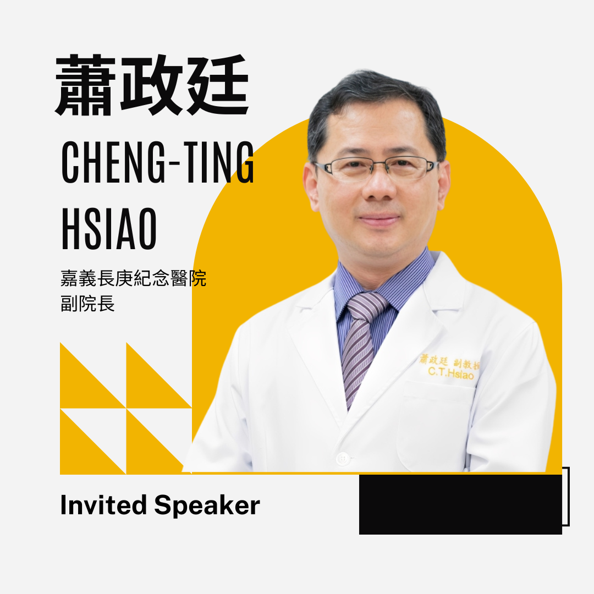
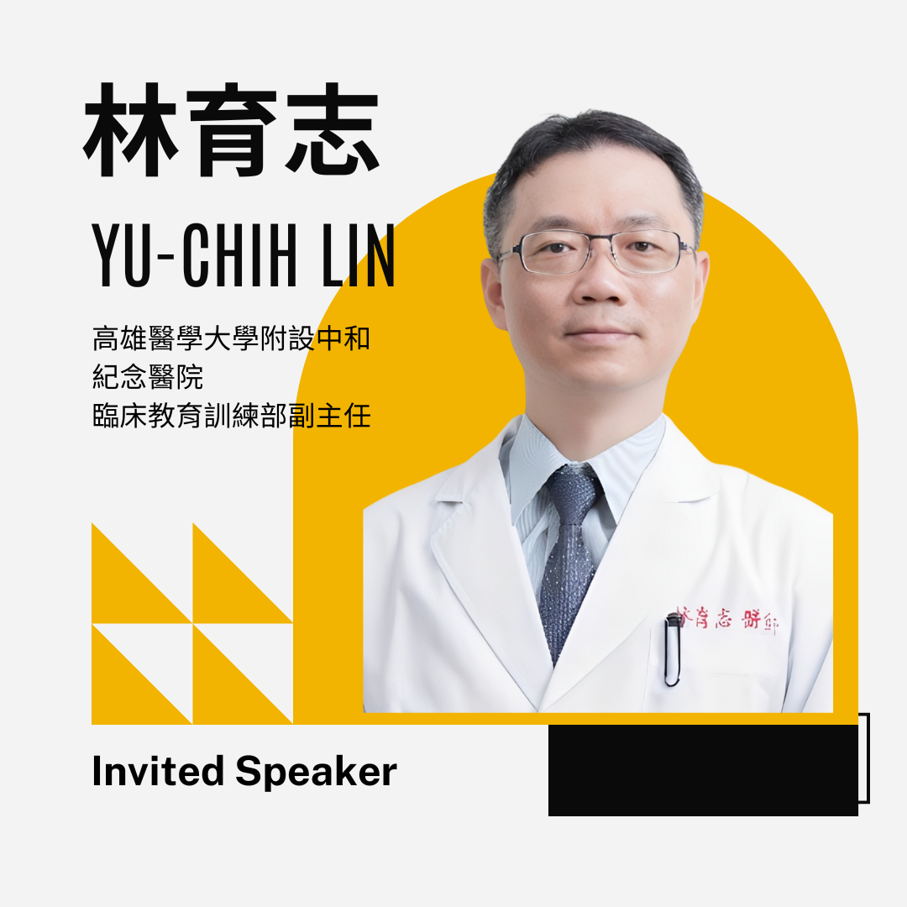

Keynote Speaker
 Keynote
Keynote
Laura Edgar, EdD
Vice President
Accreditation Council for Graduate Medical Education (ACGME)
Focusing on Implementing the Clinician Educator Milestones Across Different Contexts and its Role in Faculty Growth
Invited Speakers
 Invited
Invited
張玉喆 教授
副主任
長庚醫學教育研究中心
臨床不確定性的應對與醫師執業準備度研究

Invited
蕭政廷 教授
主任
嘉義長庚紀念醫院
全球視野、在地實踐：醫學教育的趨勢
 Moderator
Moderator
陳正文 教授
行政副院長
天主教耕莘醫院
從變革管理、實施科學到學習分析—台灣耳鼻喉頭頸外科醫學會CBME旅程

Moderator
林育志 教授
副主任
高雄醫學大學附設中和紀念醫院
ACGME, AACOM, and AAMC醫學生基礎能力架構：高醫大醫學院的驗證與應用經驗
Moderators
 Moderator
Moderator
楊志偉教授
秘書長
台灣醫學教育學會
 Moderator
Moderator
盛望徽教授
系主任、副院長
臺灣大學醫學系、臺灣大學醫學院附設醫院新竹臺大分院
 Moderator
Moderator
吳懿哲教授
院長
馬偕醫學大學醫學院
 Moderator
Moderator
林威宏教授
執行長
成功大學醫學院附設醫院
 Moderator
Moderator
林俊農教授
院長
義守大學醫學院、義大醫院執行副院長
 Moderator
Moderator
梁正隆教授
副院長
義守大學醫學院、義大醫院